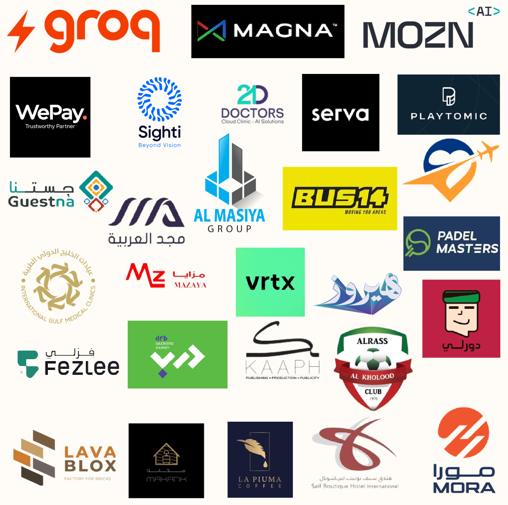

توسّع بثقة
نصمّم منظومة إدارة القيمة لأعمالك ونشغّلها معك، لتنمو بشكل مستدام، وتحسن استخدام رأس المال، وتحصد القيمة الحقيقية لابتكارك.
- قدّمنا المالية كخدمة عام ٢٠٢٣
- السعودية · الإمارات · البحرين · قطر · الأردن · مصر · ومؤخرًا الولايات المتحدة والمملكة المتحدة
- مكاتب في الرياض ودبي والقاهرة والإسكندرية
رسالتنا
تمكين الشركات الناشئة والصغيرة والمتوسطة والمنظمات غير الربحية من التوسّع بثقة، وحصد القيمة الحقيقية لابتكاراتها.
رؤيتنا
نموذج عالمي المستوى للمالية كخدمة، باشتراك يناسب كل مرحلة من دورة حياة الشركة، يقدّم من اليوم الأول خبرة لم تكن متاحة إلا للشركات الكبرى.
منهجيتنا: DEEP
اسمنا مأخوذ من منهجيتنا: الممارسة المؤسسية المدروسة (Deliberate Enterprise Practice). نشأت من خبرات مهنية رفيعة، وبحث وتطوير دقيق، وتجارب عملية في مختبر الابتكار المالي.
شراكة أعمال استراتيجية
نعمل في الصفوف الأمامية مع فرق عملائنا، شركاءَ في القرار لا مزوّدي خدمة فقط.
كفاءة رأس المال
كل قرار مالي يُقاس بأثره على النمو وعلى استخدام رأس المال.
فريق رقمي بالفطرة
أشخاص نشأوا مع التقنية، بعقلية ريادية، يستخدمون الذكاء الاصطناعي في عملهم اليومي.
مساحة مفتوحة للجميع
كل صوت مسموع؛ وكثير من ورش العمل عندنا يقودها حديثو التخرج.
كيف ننظّم فريقنا
«دييبرز» روّاد أعمال يبتكرون حلولًا لتحديات الأعمال اليوم، ويجهّزون عملاءهم للمستقبل بثقة. العالم كله مصدر مواهبنا. تصميمنا التنظيمي دائري ومرن، تتحرك فيه فرق رشيقة نحو أهداف محددة:
- مجلس الممارسة (Deep Practice Board)جهة الحوكمة التي ترسم الرؤية والأطر التي توجّه عملنا.
- مركز التميّز المالي (COFE)القلب الذي يضمن الاتساق والقيادة الاستراتيجية.
- مكاتب متخصصةالتحول المالي، وإدارة القيمة، وعلاقات المستثمرين، والاستدامة، والمالية التجارية، ومالية سلاسل الإمداد، ومالية العمليات.
المؤسس
أحمد عيسى، CMA · ACCA DipIFR · CIA، المؤسس والرئيس التنفيذي لدييب بزنس بارتنرز وكو أكتا. أكثر من عشرين عامًا من الخبرة في السعودية ومصر في قطاعات التقنية والتجزئة والتصنيع والسلع الاستهلاكية والعقار والرعاية الصحية والسفر، وقاد مشاريع تحوّل في الاستراتيجية والحوكمة والتقنية والمالية.
LinkedInعملاء نعتز بهم
مؤسسون وشركات من قطاعات ومراحل مختلفة.

الشعارات علامات تجارية لأصحابها.
خبرة على أرض الواقع
منذ ٢٠٢٣ نعمل مع مؤسسين ومستثمرين حقيقيين في قطاعات التقنية المالية والتقنية والتصنيع والرعاية الصحية والرياضة والأغذية والمشروبات والسفر والضيافة.
قدّمنا خدماتنا على أنظمة رائدة مثل Odoo وZoho وNetSuite وQoyod، فعرفنا من الداخل أين تتوقف هذه الأنظمة، ولهذا بنينا كو أكتا.